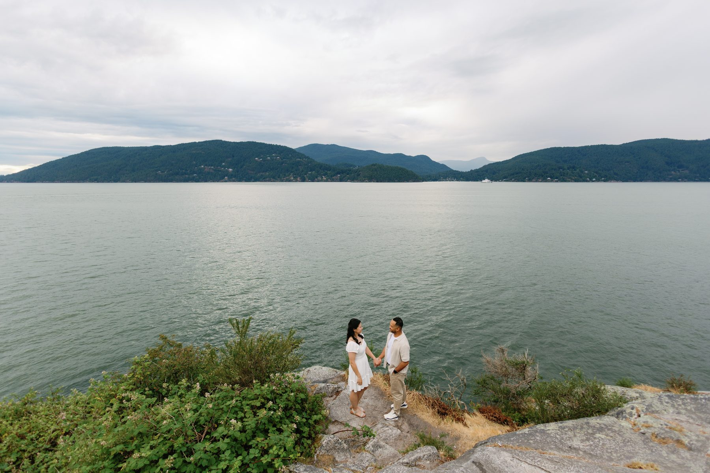
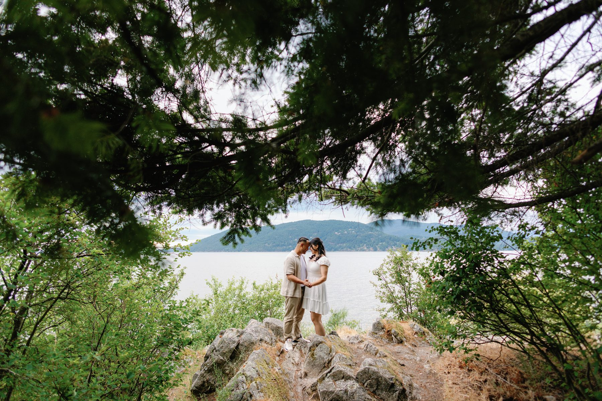
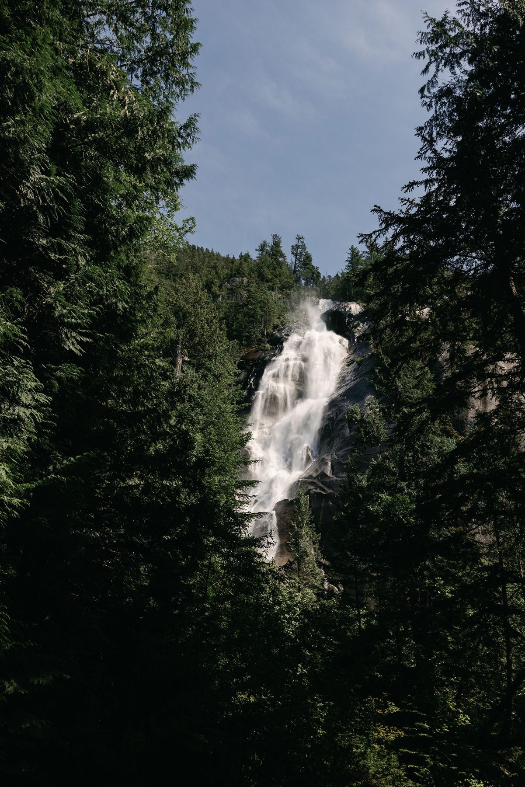
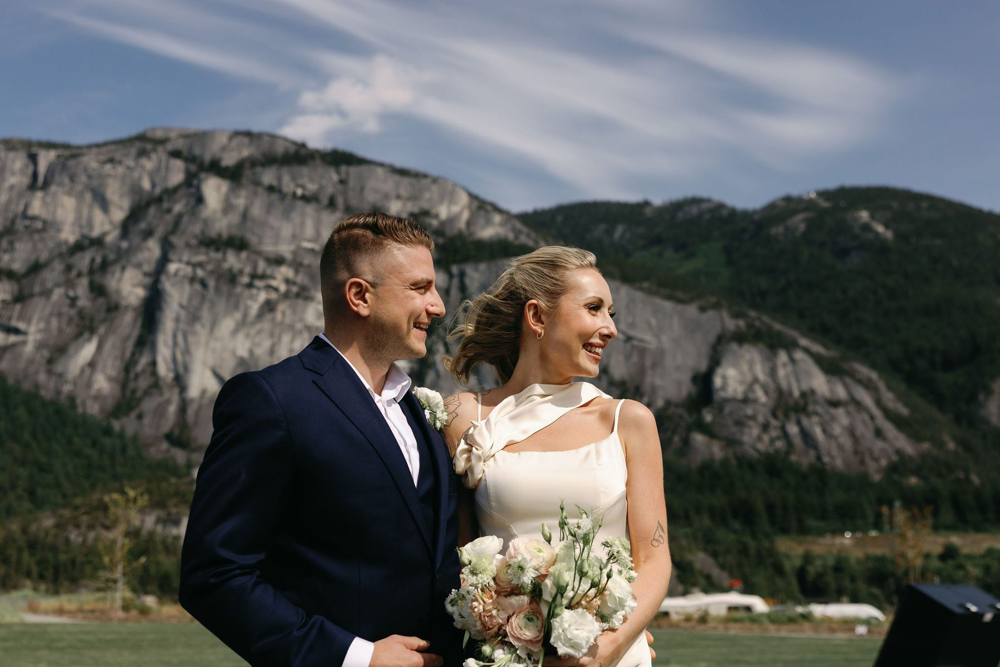
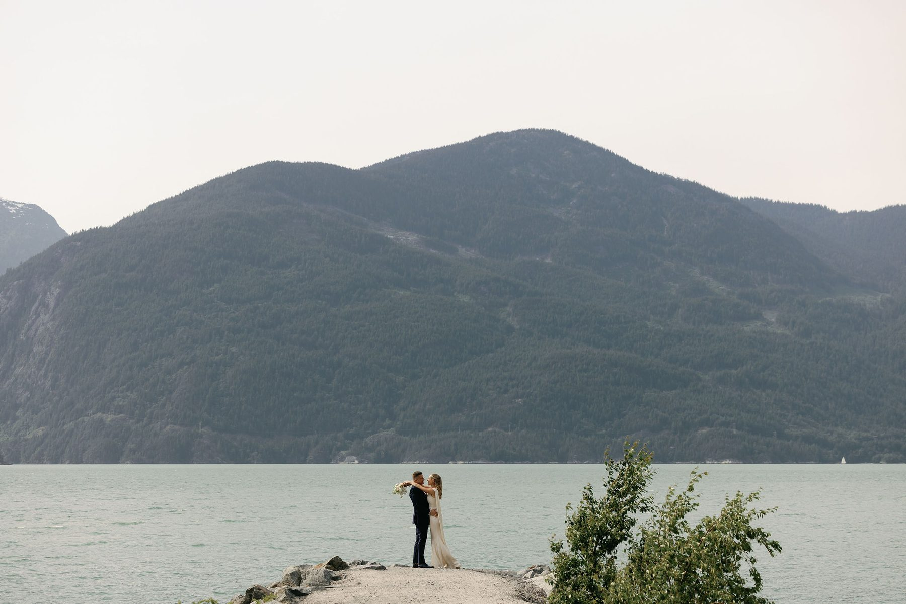
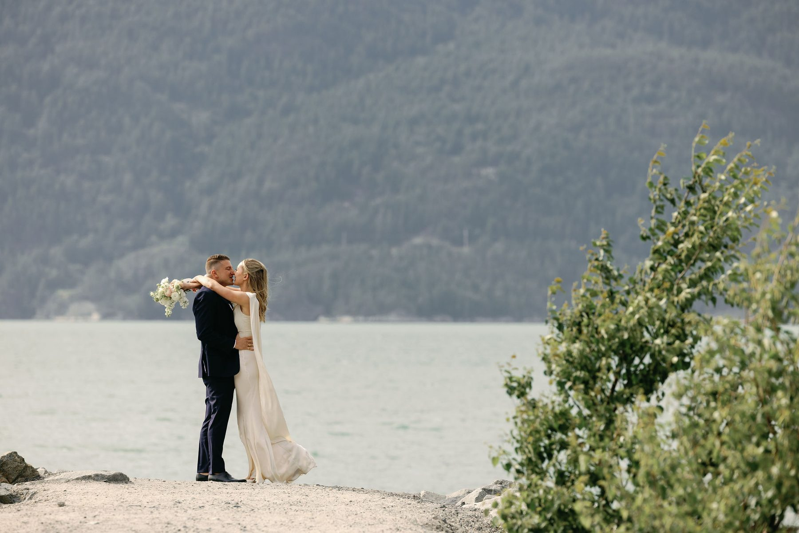

Vancouver is one of the most photogenic cities in the world. Mountains, ocean, old-growth forest — sometimes all within the same frame. If you're planning an elopement, you've landed in the right place.
More couples are skipping the 200-person ballroom wedding and choosing something smaller, more intentional, and honestly more them. An elopement in Vancouver isn't a consolation prize. It's a choice — and it's one of the best ones you can make.
Here are the locations we keep coming back to, and why they work so well.

The obvious one, but obvious for a reason. Stanley Park has a range of settings packed into one location: ancient cedars draped in moss, rocky shoreline, the seawall at golden hour, hidden trails that feel a world away from the city.
The best spots for elopements? Beaver Lake is quiet and forested. Prospect Point gives you sweeping views of the Lions Gate Bridge. Siwash Rock feels like something out of a film — dramatic, coastal, completely unexpected.
Stanley Park works for almost any aesthetic. Moody and forested. Bright and airy with the ocean behind you. Editorial urban-nature. It's versatile, and it's accessible, which matters when you want the ceremony to be the focus, not a two-hour drive.

What to know: Parking fills up fast on weekends and summer mornings. Arrive early — ideally at sunrise — and you'll have the park to yourselves.
If you want old-growth forest meeting the ocean with no one else around, Lighthouse Park is it. Massive Douglas firs, granite outcroppings, and rugged coastline with views across to Vancouver Island on a clear day.
This is one of our favourite locations for couples who want something raw and dramatic without leaving the city. The rocky bluffs give you something no curated venue can: the feeling that you found this place.

It photographs beautifully in overcast light — and in Vancouver, overcast light is basically year-round. Soft, even, no harsh shadows. Honestly ideal for photography.
What to know: Trails are uneven in spots. Skip the stilettos. Wear layers. It's worth it.
A 20-minute ferry ride from Horseshoe Bay and you're somewhere that feels completely removed from the city. Bowen Island has that quiet, unhurried quality that's hard to find close to Vancouver.

Crippen Regional Park offers forest walks, meadows, and shoreline. The small community dock at Snug Cove gives you a charming, nostalgic backdrop. For couples who want an elopement that feels like an actual getaway — not just a ceremony in a park — Bowen is hard to beat.
What to know: Ferries run regularly but they fill up. Book your return sailing before you go. And yes, we'll come with you.
Lynn Canyon is the underrated one. Most tourists head to Capilano, but Lynn Canyon is free, less crowded, and in some ways more stunning. The suspension bridge here is smaller but no less dramatic, and the canyon below — with its teal green water and mossy walls — is extraordinary.

Deep in the forest, there are pools, waterfalls, and light filtering through the canopy in ways that will make any photographer want to cry (in a good way). If you love the look of lush PNW forest, this is your spot.
What to know: Trails can be slippery near water. Best in late spring through fall. Worth the mud.
About two hours from Vancouver, Joffre Lakes is not a quick option — but for couples willing to make a half-day adventure of it, the payoff is massive. Three glacial lakes stacked up a mountain, each one a surreal shade of turquoise, with the Matier Glacier looming above.

This is the location for couples who want landscape photography that looks like it's from a different country. The hike to the upper lake is moderate — doable in dress clothes if you're reasonably fit — and you'll earn every frame.
What to know: A park reservation is required seasonally. Plan ahead. Go on a weekday if possible.
For something softer — golden, open, wide — Spanish Banks delivers some of the best sunset light in Vancouver. The beach stretches out for what feels like forever, and at low tide you get incredible reflections.

This is the location for couples who want warmth over drama. Barefoot in the sand, the mountains of the North Shore glowing behind you, the city in the distance. It's romantic in the most uncomplicated way.
What to know: Sunset elopements here are stunning but require planning around tides. We'll help figure out the timing.
The short version: Vancouver gives you access to world-class natural environments without the logistics of a destination wedding. You don't need to fly anywhere. You don't need to book a venue 18 months out. You don't need to manage 150 guests through a shuttle system.

You need: a location, an officiant, and a photographer who knows the light.
That's it.
The couples we photograph here often tell us afterward that their elopement felt more meaningful than they expected — more emotional, more present. When you strip away the noise of a big wedding, what's left is just the two of you, saying the thing you came to say.

That's worth photographing.
We're a Vancouver-based photography studio that focuses exclusively on weddings and elopements. We know these locations because we shoot them regularly — which means we know where the light falls, which trails to take, and how to make your timeline work.
Whether you're planning a spontaneous two-person ceremony or a small gathering of your closest people, we'd love to be part of it.
[Get in touch](https://simplywedstudio.com/contact) and let's figure out what your day looks like.
*SimplyWed Studio photographs elopements and intimate weddings throughout Vancouver, the Lower Mainland, and BC. Based in Vancouver.*
← Back to the journal